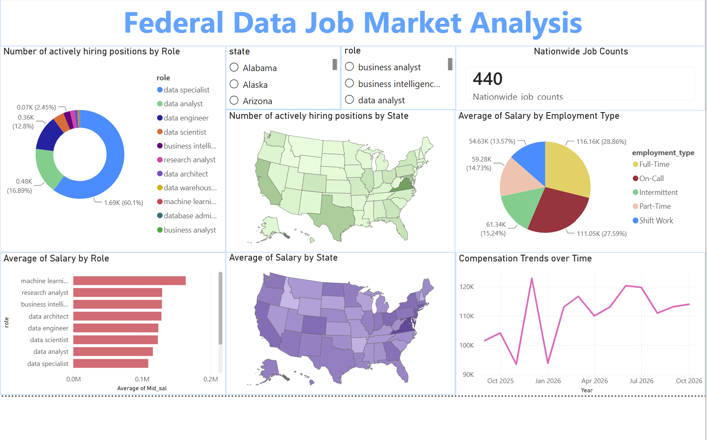

An end-to-end data pipeline analyzing thousands of federal job postings to understand data-role demand, geographic concentration, compensation patterns, and compliance-related requirements. The project combines Python ETL, PostgreSQL, Power BI, and an experimental GenAI enrichment layer.
Federal job postings contain valuable information about hiring demand, compensation, location, employment type, and technical requirements, but the information is distributed across thousands of unstructured API responses.
Raw USAJOBS data requires substantial preprocessing before it can support reliable analysis.
Build a reproducible analytical workflow that converts raw federal postings into a structured data product and interactive dashboard.
The pipeline processes federal job postings through automated extraction, transformation, validation, and PostgreSQL loading before the data is consumed by Power BI.
The project separates extraction, transformation, loading, and downstream analysis so that each stage can be tested and maintained independently.
Retrieve federal job postings through the USAJOBS API with pagination and retry handling.
Clean records, standardize fields, normalize salaries, locations, employment types, and job classifications.
Apply data-quality checks, duplicate detection, schema validation, and automated tests.
Load cleaned records into PostgreSQL using SQLAlchemy and transactional database operations.
Connect the structured dataset to Power BI for interactive market analysis and reporting.
The Power BI dashboard brings together job volume, role classification, geography, compensation, employment type, agency, and other attributes into a single analytical view.

Power BI dashboard showing federal data-job demand, geographic distribution, compensation, and employment patterns.
The analysis highlights how federal agencies are hiring data professionals, where demand is concentrated, how compensation varies, and where compliance-related requirements appear.
Data Specialists make up the majority of classified data-related postings, while Data Analysts and Data Engineers represent the next largest groups.
The remaining postings span specialized titles including BI Analysts, Data Architects, Research Analysts, Database Administrators, Data Warehouse Engineers, and ML Engineers.
Federal data-job demand is concentrated around major government and economic hubs, with Virginia leading both total job volume and average compensation.
Some postings are listed across multiple locations or include remote and telework arrangements, expanding the geographic reach of federal opportunities.
Compensation varies across technical specialties and employment types, while federal pay structures create less dispersion than many private-sector compensation systems.
Full-Time positions fall around the $116K–$120K range depending on the dashboard calculation and view. Federal GS pay structures also compress compensation across many role categories relative to private-sector data roles.
An experimental GenAI enrichment layer was used to identify explicit compliance, governance, security, and financial-system access signals within job descriptions.
High volume of explicit audit, internal governance, and control-related language.
High volume of postings containing explicit audit and internal-control signals.
High concentration of roles involving internal control and regulatory compliance frameworks.
The pilot identified 3 explicit security clearance requirements and 3 technical roles requiring direct access to sensitive financial systems or data.
These compliance and risk findings come from the experimental 26-posting GenAI pilot rather than the complete 5,588-posting dataset. The pilot used structured output validation and checked extracted evidence against the original job description before storing the result.
The project focuses on building the data infrastructure behind the analysis, rather than manually preparing a dataset for visualization.
Built Python extraction logic for USAJOBS postings with pagination and retry handling for API requests.
Standardized salary, location, employment type, agency, and job-role fields using reusable transformation logic.
Used description hashing and data-quality logic to identify duplicate-content records and reduce dataset noise.
Loaded cleaned records into PostgreSQL using SQLAlchemy and transactional database operations.
Built interactive reporting to examine job demand, compensation, geography, agencies, and employment type.
Added Python tests covering ETL behavior and experimental GenAI enrichment logic.
I experimented with Gemini to extend the traditional ETL pipeline by extracting structured compliance and risk signals from free-text job descriptions.
The enrichment worker sends selected job descriptions to the Gemini API and requests structured fields using a defined schema.
The system does not simply accept generated text. Extracted evidence is validated against the original job description before being stored as structured output.
The architecture separates ingestion, transformation, storage, analytics, and experimental enrichment into distinct components.
PostgreSQL serves as the central data layer between the ETL pipeline and downstream analytics.
The project initially experimented with other warehouse approaches, but the current implementation uses PostgreSQL as the primary storage layer to keep the project practical and cost-conscious.
The database provides a persistent, queryable source for cleaned job-posting data rather than requiring Power BI to consume raw API responses directly.
The final system turns raw federal postings into a reusable analytical workflow that supports both descriptive market analysis and experimentation with unstructured data enrichment.
Reduction in duplicate and malformed records through automated cleaning.
Raw USAJOBS postings processed as the foundation of the analysis.
Postings processed in the experimental GenAI enrichment pilot.
Data quality was treated as part of the pipeline rather than something performed manually after extraction.
Automated tests cover transformation and ETL behavior to reduce regressions as the pipeline changes.
Structured GenAI responses are validated against predefined Pydantic schemas before downstream use.
AI-generated evidence is checked against the original job description before associated signals are retained.
The repository separates the core ETL pipeline, GenAI experimentation, tests, dashboard, and supporting documentation.
The codebase is organized around individual pipeline responsibilities rather than a single monolithic script.
Job-Market-Analysis/ │ ├── etl_job_market.py ├── extract.py ├── transform.py ├── load.py ├── engine.py │ ├── genai_enrichment.py │ ├── tests/ │ ├── test_etl_job_market.py │ └── test_genai_enrichment.py │ ├── experimentation/ │ └── Pipeline_for_Data_Job_Market_Analysis.ipynb │ ├── Federal_Data_Job_Market_Analysis.pbix ├── Dashboard.png ├── GenAI_dashboard.png │ └── README.md
The project combines data engineering, database, analytics, testing, and AI technologies.
Future iterations could expand the GenAI enrichment beyond the current pilot, introduce scheduled ingestion, and add historical trend analysis to monitor how federal data-job demand changes over time.
Scale structured job-description enrichment beyond the current pilot when API cost and rate limits allow.
Automate recurring API extraction to maintain a continuously updated dataset.
Track changes in federal data-role demand, compensation, and geographic concentration over time.
Expand structured compliance and governance signals to support more detailed job-level analysis.